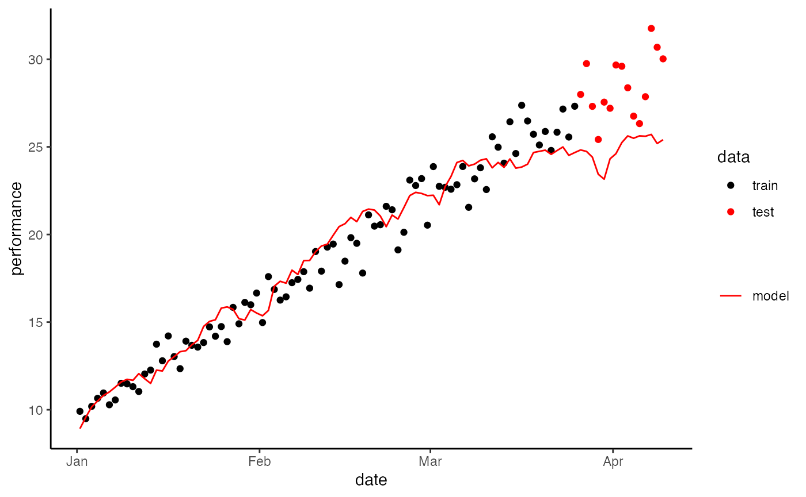

Main function
These functions being presented, we can model the performance according to the variable dose-response model (Busso, 2003).
Performance modelling within a simple 80 / 20 data split for model validation
P0_init <- init_perf(data = data, target = target)
theta_init <- c(P0_init = init_perf(data = example_data, target = "perf"), k1_init = 0.5, k3_init = 0.1, tau1_init = 40, tau2_init = 20, tau3_init = 5)
lower <- c(P0_init - 0.10 * P0_init, 0, 0, 10, 1, 1)
upper <- c(P0_init, 1, 1, 80, 40, 10)
model_results <- sysmod(data = example_data,
vars = list("input" = example_data$training_load, "time" = example_data$rest),
target = "perf", date_ID = "datetime",
specify = list("theta_init" = theta_init, "lower" = lower, "upper" = upper, "optim.method" = "nlm"),
validation.method = "simple",
specs = list("initialWindow" = 0.8, "horizon" = 0.2, "fixedWindow" = FALSE))| RMSE | MAE | Rsquared |
|---|---|---|
| 2.332 | 1.734 | 0.892 |
Performance modelling within a time series cross-validation.
model_results_TSCV <- sysmod(data = example_data,
vars = list("input" = example_data$training_load, "time" = example_data$rest),
target = "perf", date_ID = "datetime",
specify = list("theta_init" = theta_init, "lower" = lower, "upper" = upper, "optim.method" = "nlm"),
validation.method = "TS-CV",
specs = list("initialWindow" = 50, "horizon" = 15, "fixedWindow" = FALSE))| RMSE | MAE | Rsquared |
|---|---|---|
| 3.613 | 3.253 | 0.097 |
#> `summarise()` ungrouping output (override with `.groups` argument)
#> `summarise()` ungrouping output (override with `.groups` argument)